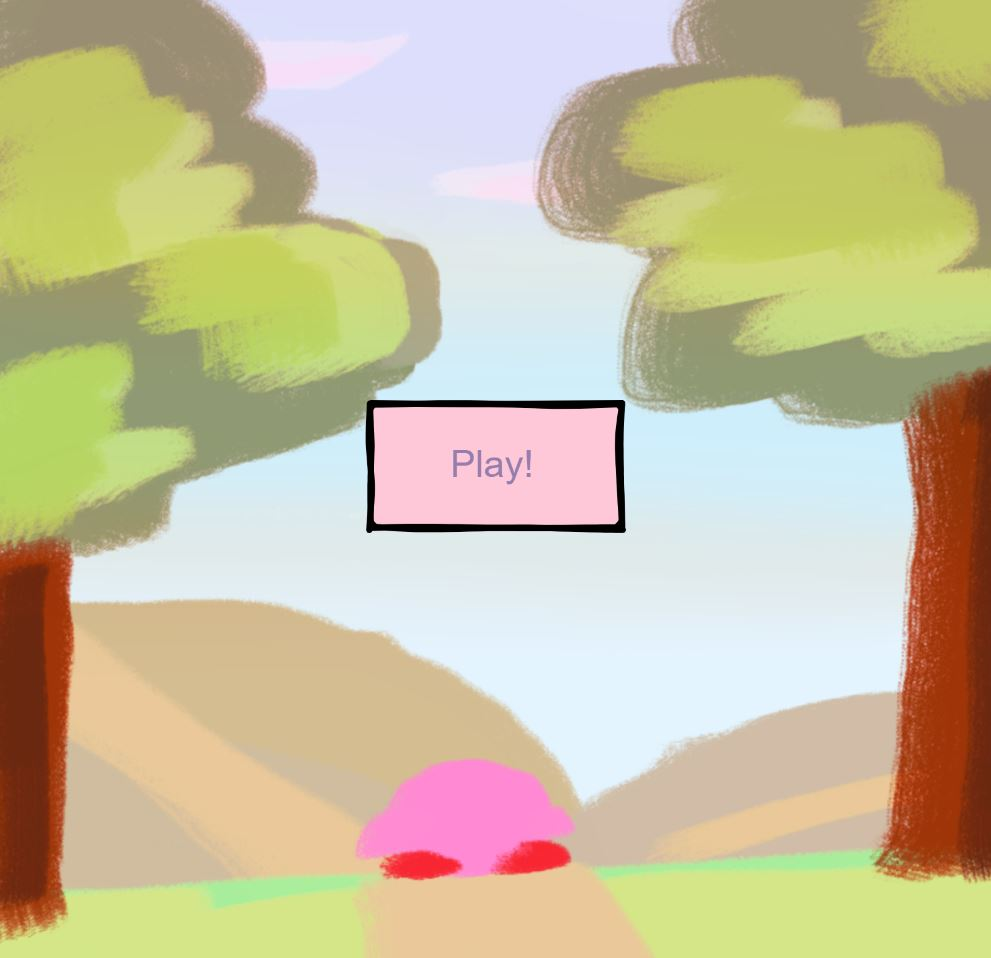
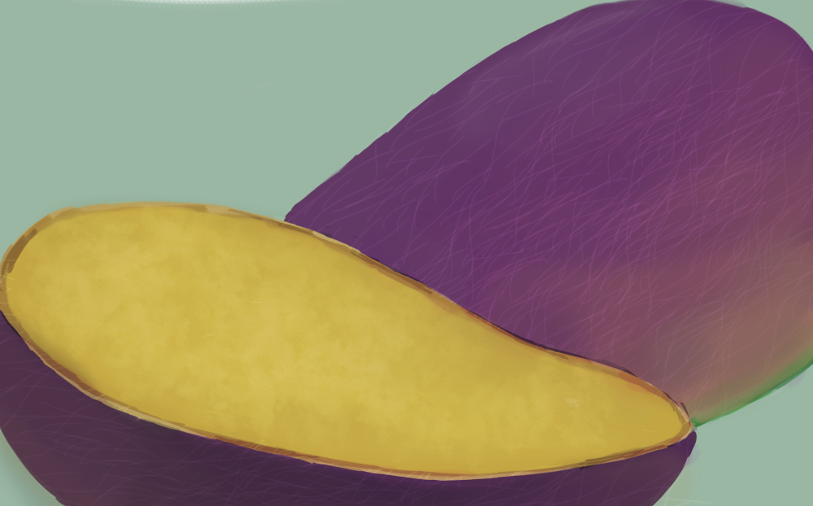
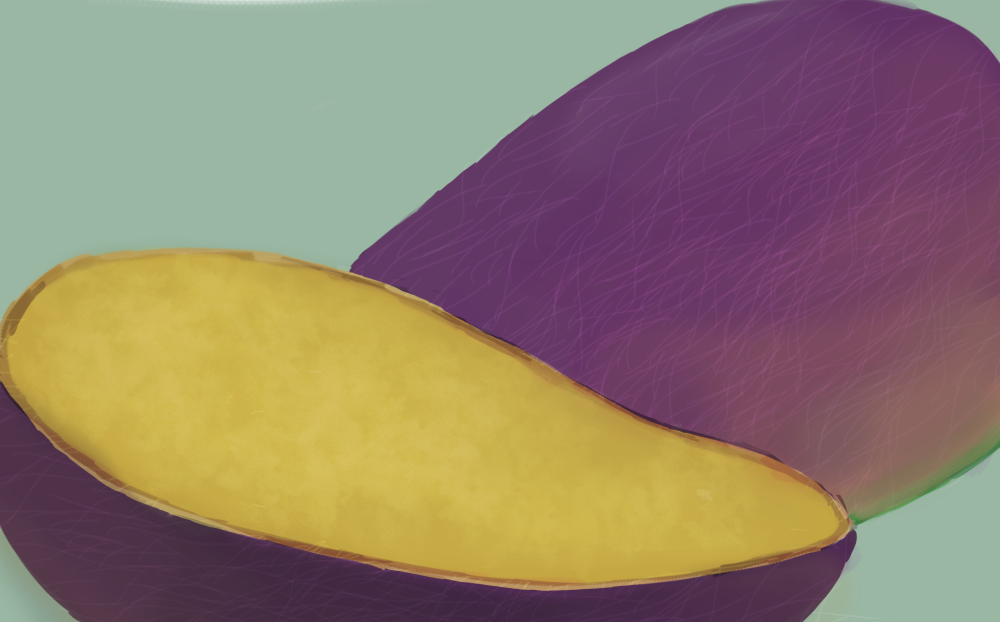
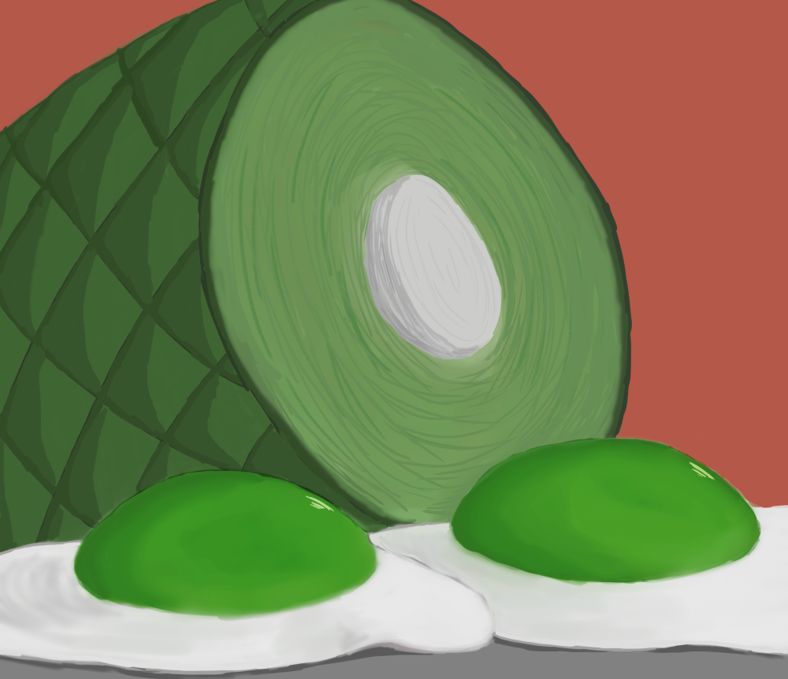
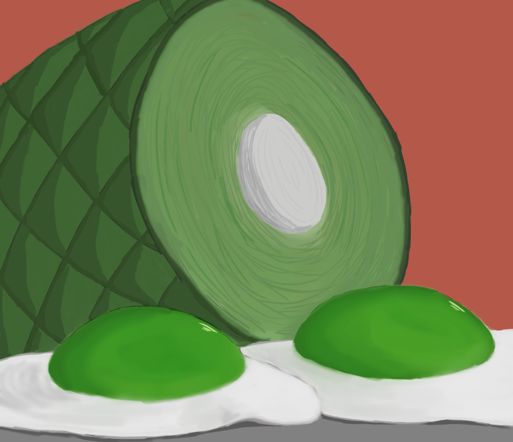

Art 103 Student Art Presentations and Process Part 2
"S@!L0R |\/|00|\|", Net Art, 2018
This website is about one of my favorite childhood shows, Sailor Moon. This is based on the English dub version where many scenes were censored to be more appropriate for the US audience. I made the theme glitchy to represent the censorship in this show.
"Interact with Kirby", p5.js, 2019
I created a mini game where the player will interact with Kirby by clicking on the icons to fill the affection bar
located on the top right corner.
The code can be found here. Run sketch here.
 

 

{kind=link}
{kind=link}
"Bizarre Color Food Series", Digital Art, Clip Studio Paint & Photoshop, 2018
This is my first time drawing food portraits and I wanted to add a unique colors into the foods that we don't usually see. I was struggling on what kind of food I want to draw so I discussed this idea with my friend named Gaby. She suggested me to draw in unique colors to make the art piece
look bizarre. She brought up the green eggs and ham from the Dr. Seuss story. When I looked up the images for reference, I noticed how people recreated the green eggs and ham
into reality so it made me curious if there were other foods that were like this. This research led me to see black hamburger, purple mango, and pink noodles. After seeing this,
it makes me want to travel to those areas so I can eat those bizarre color food.
Reading 1